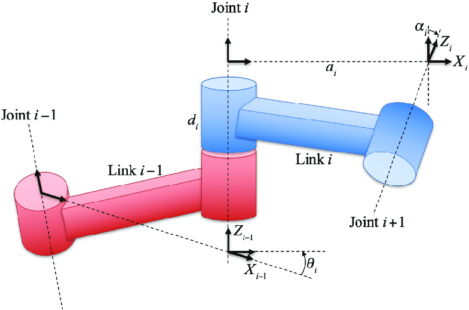
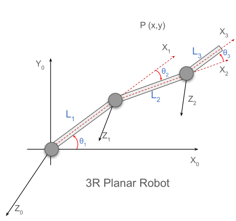

Chapter 2: Denavit–Hartenberg (DH) Parameters¶
1. Motivation: Why Do We Need a Systematic Method?¶
In the previous lecture, we solved forward kinematics using trigonometry.
Although this approach works for simple robots, it has several limitations:
- The method becomes complicated when the robot has many links.
- It is not systematic, meaning every robot requires a new geometric derivation.
- If the joint orientation changes, the whole derivation must be redone.
- It becomes very difficult to extend this method to 3D robot manipulators.
Because of these limitations, robotics researchers introduced a standard mathematical framework called the Denavit–Hartenberg (DH) Parameter Method.
The DH method provides a structured way to describe the geometry of a robot and is widely used in robotics software and industrial robot modeling.
2. What are DH Parameters?¶
The Denavit–Hartenberg convention is a systematic method to describe the relative transformation between consecutive robot links.
Instead of manually writing equations, each joint is described using four parameters.
These parameters define how one coordinate frame moves relative to the previous frame.
DH Parameter Illustration¶
Add the following image to help visualize the parameters.
Place the image in:

3. The Four DH Parameters¶
Each joint in a robot is described using four Denavit–Hartenberg (DH) parameters.
| Parameter | Name | Meaning |
|---|---|---|
| \(a_i\) | Link Length | Distance between \(z_{i-1}\) and \(z_i\) measured along \(x_i\) |
| \(d_i\) | Joint Offset | Distance between \(x_{i-1}\) and \(x_i\) measured along \(z_{i-1}\) |
| \(\alpha_i\) | Link Twist | Angle between \(z_{i-1}\) and \(z_i\) measured about \(x_i\) |
| \(\theta_i\) | Joint Angle | Angle between \(x_{i-1}\) and \(x_i\) measured about \(z_{i-1}\) |
Each of these parameters represents a geometric relationship between two adjacent links.
4. Understanding Each Parameter¶
4.1 Link Length \(a_i\)¶
The link length represents the distance between two joint axes.
Mathematically,
Intuition¶
Imagine moving from axis \(z_{i-1}\) to axis \(z_i\) only along the \(x_i\) direction.
The distance you travel is the link length.
Important Observation¶
Sometimes the two axes are separated, but not along the \(x_i\) direction.
In that case,
because DH only measures the distance along the \(x_i\) axis.
4.2 Joint Offset \(d_i\)¶
The joint offset measures how much the coordinate frame shifts along the previous joint axis.
Intuition¶
Imagine walking from \(x_{i-1}\) to \(x_i\) along the direction of \(z_{i-1}\).
The distance traveled represents the joint offset.
In many planar robots,
because there is no displacement along the vertical direction.
4.3 Link Twist \( \alpha_i \)¶
Link twist measures the rotation between the two z-axes.
Intuition¶
Rotate the next coordinate frame around the \(x_i\) axis.
The angle created between \(z_{i-1}\) and \(z_i\) is the link twist.
Typical values include:
- \(0^\circ\)
- \(+90^\circ\)
- \(-90^\circ\)
depending on the robot configuration.
4.4 Joint Angle \( \theta_i \)¶
The joint angle describes the rotation of the joint itself.
Intuition¶
Rotate the coordinate frame around the joint axis \(z_{i-1}\).
The angle between \(x_{i-1}\) and \(x_i\) is the joint angle.
For revolute joints, this value changes when the motor rotates.
5. Why DH is Useful¶
The DH convention allows us to describe complex robots using a simple table representation.
Once the DH parameters are known, we can automatically compute:
- Forward kinematics
- Transformation matrices
- End-effector position
This makes DH parameters a standard method in robotics modeling and simulation.
6. Example: 3R Planar Robot¶
Now we apply the DH method to a 3R planar robot manipulator.
Add the image from the slides here.

This robot contains:
- Three revolute joints
- Link lengths \(L_1, L_2, L_3\)
- Joint angles \( \theta_1, \theta_2, \theta_3 \)
- End-effector position \(P(x,y)\)
7. Constructing the DH Table¶
Using the definitions of DH parameters, we construct the following table.
| i | \( \theta_i \) | \( a_i \) | \( d_i \) | \( \alpha_i \) |
|---|---|---|---|---|
| 1 | \(+\theta_1\) | \(L_1\) | 0 | 0 |
| 2 | \(-\theta_2\) | \(L_2\) | 0 | 0 |
| 3 | \(+\theta_3\) | \(L_3\) | 0 | 0 |
Why are many parameters zero?¶
Because this robot is planar:
- All joint axes are parallel → \( \alpha_i = 0 \)
- No vertical displacement → \( d_i = 0 \)
Key Takeaway¶
The Denavit–Hartenberg convention provides a systematic way to represent robot geometry using four parameters per joint.
Once these parameters are known, the robot's kinematics can be derived using matrix multiplication, making the analysis scalable to complex robotic systems.